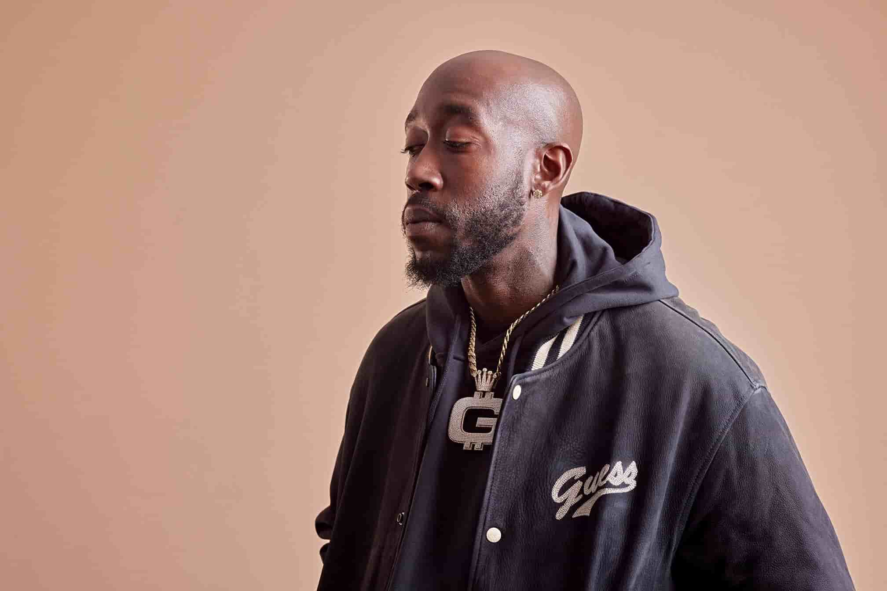

About the Artist
Life
Early Life
After his expulsion, he was enlisted in the Army but was later dishonorably discharged when he got caught smoking weed. Later, when he was working at the mall, he met a producer who invited him to his studio, beginning his rap career.
Early Career - Current
His career started in 2004 with the release of his mixtape "Full Metal Jackit," after which he signed to Interscope Records and was subsequently dropped from the label in 2006. In 2011, he signed to Young Jeezy's label, CTE World. He released a few more mixtapes and was part of XXL's 2010 Freshmen Class. He left CTE World in 2012 and released "Pinata" in 2014. Since then, he's released several more solo and collab projects, and has become one of the most well respected rappers in the scene.
Discography
Three Best Albums/Three Best Songs
Pinata
- Shame
- Thuggin'
- Broken
Bandana
- Gat Damn
- Cataracts
- Situations
Alfredo
- Frank Lucas
- 1985
- Something to Rap About
Controversies
- Admittedly shot a "crackhead" nine times in the back.
- Was reportedly beaten up by Jim Jones' entourage in Miami.
- Was beaten up at a BBQ join in Buffalo, NY.